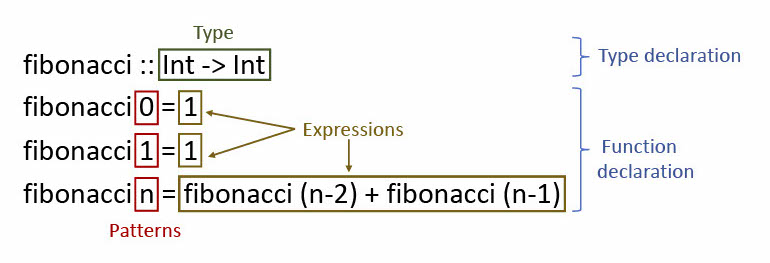

When going through Haskell modules that deal with databases, it is not terribly difficult to stumble upon code that is constructed more or less this way:
getInfo :: SomeType -> IO (SomeOtherType)
getInfo input =
queryNamed [sql|
SELECT t.some_nice_info
FROM this_table t
WHERE t.id IN ?input
|] [“input” =? input]Just like that, we seamlessly embed SQL code in the middle of a Haskell function!
This [sql| … |] construction from the postgresql-simple library is used rather frequently in the backend of Holmusk products, and its conciseness has surely saved many typing-hours to date. But what exactly is this square bracket constructor, and what kind of magic does it use to allow for insertion of SQL code within Haskell?
This embedding of external languages into Haskell code is done, in part, through the use of Template Haskell, a technique that allows for the algorithmic construction of programs at compile-time. In other words, Template Haskell supports meta programming: it allows you to write programs that, in turn, construct other programs during compilation.
In this blog post, we will give a beginner-friendly introduction to Template Haskell and work through some interesting examples of how it can be used. The code samples in this article use template-haskell version 2.16.0.0, which is one of the boot libraries that ship with GHC 8.10.
What is Template Haskell?
Template Haskell, or TH, is a GHC extension to Haskell that allows users to perform compile-time meta-programming. This is done through the construction of abstract syntax trees, which are then transformed into the corresponding regular (or ‘concrete’) Haskell code during compilation.
Since its conception nearly two decades ago [1], Template Haskell has enabled Haskellers to more easily manipulate their programs. Nowadays, TH is mostly used to:
- Write different programs all at once (for example, several instances for a class) by means of a single algorithmic description, thus reducing ‘boilerplate’ code
- Embed files or external code into Haskell modules
In Template Haskell, in contrast to meta-programming in C++, the functions that execute at compile-time are written in the same language as the functions that execute at run time, that is, Haskell. This means that you can directly apply your Haskell skills and use standard libraries when writing TH programs.
How does Template Haskell work?
To understand how Template Haskell works, we first need to have a clear idea of how programs are represented in Haskell. Haskell syntax can be roughly divided into four categories [2]:
- Expressions
- These are the most common, and represent anything that GHC can evaluate: variables, literals, lambdas, function applications, if-then-else expressions, and so on.
- Generally, this corresponds to the right-hand-side of function definitions.
- These are the most common, and represent anything that GHC can evaluate: variables, literals, lambdas, function applications, if-then-else expressions, and so on.
- Declarations
- Declarations are simply statements that introduce something new. Some examples are:
- function declarations:
f x = x + 1introduces a meaning to the variablef. - class declarations:
class Eq a where ..., - instance declarations:
instance Eq Int ...declares thatIntis a member of the type classEq, - type declarations:
data Bool = False | True, and - the statements that come in a
where ...clause.
- function declarations:
- Declarations are simply statements that introduce something new. Some examples are:
- Patterns
- Patterns are used to ‘match’ expressions, and they are widely used in Haskell functions. In function declarations, they are placed between the function name and the
=sign.- For example, in
f 4 = 5, the literal4is a pattern against which the argument passed tofwill be matched (successfully or not). - Constructors can also be patterns: see
f (Just val) = valorf Nothing = 0.
- For example, in
- Patterns are used to ‘match’ expressions, and they are widely used in Haskell functions. In function declarations, they are placed between the function name and the
- Types
- Types are the ‘labels’ or ‘categories’ of terms.
- Some examples are
Int,Bool -> Int,Monad m => a -> b -> m (c,d), etc.
- Some examples are
- Types are the ‘labels’ or ‘categories’ of terms.

It turns out that this simple classification allows us to express almost anything in Haskell and, by extension, Template Haskell! In fact, we can write the TH version of any ‘normal’ Haskell code by simply converting it into a TH abstract syntax tree, which is done by using the constructors of the Dec, Exp, Pat and Type data types defined in the template-haskell support library.
Getting your hands dirty
Now that we have learned about the building blocks of Template Haskell, we can begin writing some TH programs. We recommend that you start up a GHCi session to work through the following examples alongside us.
Before getting started, make sure you import the template-haskell package as well as add the TH language extension as follows:
λ> import Language.Haskell.TH
λ> :set -XTemplateHaskellStep 1: Dip your toes
We start with a simple example. Suppose you want to write a function that adds 4 to a given number. In our familiar Haskell, you may write the following lambda expression:
\a -> a + 4In TH, we would write something like:
add4 = do
x <- newName "x"
return $ LamE
[VarP x]
(InfixE (Just (VarE x)) (VarE '(+)) (Just (LitE (IntegerL 4))))Let’s unpack this function together. The first statement of the do block is
x <- newName "x"To prevent inadvertent capture of top-level variables, we need a way of generating fresh names in our TH programs. This is conveniently done with the function newName :: String -> Q Name (more on this Q monad soon).
We can then move on to the return statement of our add4 function. This is simply a TH LamE expression (the equivalent of a Haskell lambda), which itself encapsulates more expressions. We can represent this structure as a tree:
LamE
/ \
[] InfixE
/ / | \
VarP Just VarE Just
/ / | \
x VarE ‘(+) LitE
/ \
x IntegerL
\
4Let us first take a look at the left subtree of LamE:
[]
/
VarP
/
xThis is essentially what in a ‘normal’ Haskell lambda would come before the ->. In other words, the left subtree contains the patterns that the inputs to our lambda will be matched against. Our add4 function takes in only one argument, so our list has a single element: VarP x, indicating that any argument passed to add4 will be bound to the variable name x.
Now, we can turn our attention to the right subtree of the LamE node:
InfixE
/ | \
Just VarE Just
/ | \
VarE ‘(+) LitE
/ \
x_1 IntegerL
/
4This subtree represents the part that comes after the -> in a regular lambda, that is, the expression we want to evaluate. The underlying idea is rather simple: we wrap variable names in the VarE expression constructor, and literals are wrapped with the LitE expression constructor. The 'name construction allows our TH syntax trees to refer to functions and values defined in regular Haskell, and we use it to refer to the (+) function from Prelude, which is imported implicitly in every Haskell module. The (+) function is then encapsulated by a VarE constructor. Finally, these three expressions are wrapped inside the InfixE constructor, which looks like this:
InfixE (Maybe Exp) Exp (Maybe Exp)Therefore, our InfixE* takes in three arguments and, together with its arguments, represents the x + 4 operation. Note that x and 4 are passed as Maybe values. An expression like x + would have Nothing as its final argument.
*You may be starting to notice a pattern in the capital letters that suffix each syntax constructor: the most common are E, D, P, or T, and they conveniently indicate whether a given term is a constructor for Exp, Dec, Pat, or Type.
Finally, with the LamE constructor and its two arguments (the left and right subtrees in our diagram), we have all that we need to form the bulk of our add4 function, which is of type:
add4 :: Q ExpThat is, add4 is simply an Expression encapsulated by the Q monad.
Template Haskell programs are written inside the quotation monad Q. It supports the usual monadic operations as well as the newName function.
That seems like a lot of work!
You may be thinking that writing functions as explicit abstract syntax trees, albeit doable, is rather cumbersome. If a simple addition requires so many terms, writing a large program must take ages.
Luckily, Template Haskell provides us with a convenient way of parsing a fragment of concrete Haskell syntax into an abstract syntax tree fragment. All we need to do is write the concrete syntax in quotations:
add4' = [e| \x -> x + 4|]The e within the bracket indicates that this quotation encapsulates an expression. However, expressions are used so frequently in quotations that they are the default, and we could instead leave them out:
add4' = [|\x -> x + 4|]In GHCi, we can use the very convenient runQ function to execute the add4 function inside the Q Monad:
λ> runQ add4'
LamE [VarP x_4] (InfixE (Just (VarE x_4)) (VarE GHC.Num.+) (Just (LitE (IntegerL 4))))Which very conveniently returns our fully-fledged AST, just as we would expect!
Quotations and quasi-quotes
As we have seen, quotations allow us to parse concrete Haskell syntax into an abstract syntax tree, thus allowing us to write more ‘familiar’ Haskell code in a meta-program. A quotation has the form [quoter| ... |], where ‘quoter’ can be one of d, e, p, or t, indicating that the code in ... is a declaration, expression, pattern, or type, respectively.
Since GHC 6.9, Template Haskell allows users to define their own way of parsing concrete Haskell code into abstract syntax trees. This is what, in part, allows for the embedding of domain specific languages in Haskell. One example of this is the [sql|...|] construction we saw in the beginning of this article.
In the original Template Haskell paper [1], quotations are referred to as ‘quasi-quotes’. The term ‘quasi-quotes’ has since evolved to refer only to user-defined quotations.
Splicing
To run a meta-program like add4 or add4', we use the $ (read: splice) operator. The code snippet below evaluates add4 and inserts the result (an object program) back in place of the splice.
λ> $(add4) 5
9Note that there cannot be any space between the splice operator and the succeeding identifier or parenthesis.
Step 2: Dive in!
We are now ready to explore a more complex example. This part was inspired by the suggested exercises from this blog post [3], and by the example given in [1].
Suppose you want to write a function that, given a tuple t and a function f, applies f to one element of t. If we know, for example, that t has 3 elements, and we want to apply f to its second element, we can do the following:
mapTuple2_3 :: (a, t, c) -> (t -> b) -> (a, b, c)
mapTuple2_3 f (x1, x2, x3) = (x1, f x2, x3)This implementation works just fine, but is rather limited: what if we want to access the first element of the tuple, rather than the second? Or what if we are dealing with a tuple of size different than 3?
The lens library has methods for dealing with tuples of arbitrary sizes, but it would be nice to be able generate our own instances and methods for dealing with tuples. This way, we are not limited by the constraints of external libraries—for example, lens only allows us to access the first 19 elements of a tuple.
So, how can we write mapTuple2_3 more generally? Ideally, we would want a higher-order function that, given a tuple of size n **and a tuple index * i*, can generate a function mapTuplei_n that behaves just like mapTuple2_3, but for the given parameters instead.
In Template Haskell, we could invoke this higher order function the following way:
$(mapTupleX 2 3) f tBut how can we write mapTupleX?
mapTuple :: Int -> Int -> Exp Q
mapTuple i n = [| \f t -> case t of ... |]Unfortunately, we cannot write the ... part in normal Haskell, because the pattern for case t depends on the size of the tuple. Here, we start to see the limitations of the quotation ([| ...|]) notation: it only allows for indirect construction of ASTs, which may not be expressive enough for our programs.
The quotation notation, although convenient, has limited expressiveness. To build certain meta-programs, we still have to rely on explicit syntax constructors.
Generating Classes
As we have seen, sometimes we cannot escape the daunting—but fun!—task of building explicit abstract syntax trees. To write the mapTupleX function, we start by creating the MapTH.hs file and importing the TH library.
{-# LANGUAGE TemplateHaskell #-}
module MapTH where
import Control.Monad (unless)
import Data.Traversable (for)
import Language.Haskell.THBefore writing the function that generates mapTupleX instances, we need a way of generating the class of tuples which we want to “mapX” over.
Class declarations in TH are written with the ClassD constructor:
ClassD Cxt Name [TyVarBndr ()] [FunDep] [Dec]Let’s take a look at each of its fields:
Cxt: a list of constraints on our types (e.g.Eq a,Ord b). In our case, we leave this empty.Name: The name of our class. We will name each classTupleMapsuffixed by the index of the element we want to apply f to.[TryVarBndr]: These are the type bindings of our typeclass, which in our case aret: the binding for the input tuple,t': the binding for the output tuple,r: the binding for the element that we want to apply f to, andr': the binding for the result of function application onr.
**[FunDep]**: the functional dependencies of our class. In this case, we have:t -> r, andt' -> r'
We use these to indicate how our types ‘depend’ on each other:
ris always an element oft, andr'is always an element oft'. Note that, just like mathematical functions are defined as a mapping of only one output for any given input, a functional dependencyx -> yindicates that there exists only one corresponding term of typeyfor any term of typex.**[Dec]**: declarations for the class. Here, we have a method declaration_X_, which is of type(r -> r') -> t -> t'.
To follow the same standard as the tuple functions from the lens library, we use 1-based indexing. For safety, we also do a bounds-check in index using unless, which throws an error if a user tries to access a non-positive index.
With this in mind, we can write our TupleMapX class generator:
genTupleMapXClass :: Int -> Q [Dec]
genTupleMapXClass index = do
unless (index > 0) $
fail $ "Non-positive index: " ++ index_
pure [cDecl]
where
index_ = show index
className = mkName $ "TupleMapX" ++ index_
methodName = mkName $ "_" ++ index_ ++ "_"
t = mkName "t"
t' = mkName "t'"
r = mkName "r"
r' = mkName "r'"
-- class TupleMapX t t' r r' | t -> r, t' -> r' where
cDecl = ClassD
[]
className
[PlainTV t, PlainTV r, PlainTV t', PlainTV r']
[FunDep [t] [r], FunDep [t'] [r']]
[mDecl]
-- _X_ :: (r -> r') -> t -> t'
mDecl = SigD methodName $
arr (arr (VarT r) (VarT r')) (arr (VarT t) (VarT t'))
-- Helper function: `arr x y` produces the type `x -> y`
arr :: Type -> Type -> Type
arr = AppT . AppT ArrowTVisualising code: -ddump-splices
It is often helpful to visualise the code that Template Haskell is generating. We can add the -ddump-splices flag ****to GHCi to see the objects that our programs generated. For example:
λ> :set -ddump-splices
λ> $(add4) 5
<interactive>:78:3-6: Splicing expression
add4 ======> \ x_a6Yot -> (x_a6Yot + 4)
9Staging restrictions
At present, one cannot splice TH code into the same module as the code is defined. Therefore, let’s write a Main.hs file from which we can invoke the function that generates TupleMapX classes.
In addition to the Template Haskell language extension, we include the FlexibleInstances pragma, which will allow us to create instances for tuples of any type. We also use the FunctionalDependencies extension to allow us to define functional dependencies, which we covered in the previous section.
{-# LANGUAGE FlexibleInstances #-}
{-# LANGUAGE FunctionalDependencies #-}
{-# LANGUAGE TemplateHaskell #-}
import MapTH
$(genMapClass 2)Now, when loading Main in GHCi, we get:
λ> :l Main.hs
[1 of 2] Compiling MapTH ( MapTH.hs, interpreted )
[2 of 2] Compiling Main ( Main.hs, interpreted )
Main.hs:7:3-21: Splicing declarations
genTupleMapXClass 2
======>
class TupleMapX2 t r t' r' | t -> r, t' -> r' where
_2_ :: (r -> r') -> t -> t'The class and method declarations look as they should!
Generating Instances
We can now take a stab at actually implementing our method by writing an instance of TupleMapX.
Firstly, let’s look at how instance declarations are defined in TH:
InstanceD (Maybe Overlap) Cxt Type [Dec]The constructor fields of InstanceD are the following:
**Maybe Overlap** andCxt: these represent, respectively, potential instance overlaps and type constraints; we won’t need either.Type: the type of our instance. This will be the class name (TupleMapX, whereXis the index ofr) followed byt,r,t', andr', as defined previously.**[Dec]**: **** a list of declarations for our instance: think of this as the bit that comes in thewhere ...of regular Haskell declarations.
In our case, the field [Dec] will consist of a single declaration: our method declaration, which is a function declaration specifying that we want to apply function f to a given element of the input tuple. Let’s also have a look at how function declarations look like in TH:
FunD Name [Clause]The first field of FunD will be the name of our method (_index_, as previously defined), and the second field will be a list of Clauses. What exactly is a Clause?
Clause [Pat] Body [Dec]So the fields of Clause are a list of patterns, a body (which may have guards or not), and a list of declarations. This is exactly how regular Haskell functions are defined. For example, let pat1 and pat2 be patterns and decs be a list of declarations, and check out the following ‘clause’ in normal Haskell:
f { pat1 pat2 = body where decs }Neat! So, the Clause in our function declaration should take in a Pattern that f can be matched against, a pattern that our input tuple t can be matched against, and a body specifying that we should return a t′ that is just like t, except that it contains an element * r′ = f* r where t had r. That’s it! We won’t even have any use for the [Decs].
Without further ado, here is the function that generates an instance of TupleMapX
-- Generate an instance of TupleMapX
genTupleMapXInstance :: Int -> Int -> Q [Dec]
genTupleMapXInstance index size = do
unless (index > 0) $
fail $ "Non-positive index: " ++ index_
unless (size >= index) $
fail $ "Can't access index " ++ index_ ++ " of " ++ size_ ++ "-tuple"
pure [iDecl]
where
index_ = show index
size_ = show size
className = mkName $ "TupleMapX" ++ size_
methodName = mkName $ "_" ++ index_ ++ "_"
-- Name for the function that we want to MapX
f = mkName "f"
-- helper function: tag x = x' :: String
tag = (<> "'") . show
-- Types ---------------------------------------------------------------
-- vars = [Var "t1", Var "t2", ..., Var "t{index}", ...]
vars = [VarT $ mkName ('t' : show n) | n <- [1..size]]
-- vars' = [Var "t1", Var "t2", ..., Var "t{index}'", ...]
vars' = [VarT $ mkName ('t' : show' n) | n <- [1..size]]
where show' n = if n == index then tag n else show n
tuple = mkTuple vars
tuple' = mkTuple vars'
term = mkTerm $ show index
term' = mkTerm $ tag index
-- Helpers
-- mkTuple :: Foldable t => t Type -> Type
-- mkTuple [t1, t2, ...] = (t1, t2, ...)
mkTuple = foldl AppT $ TupleT size
-- mkTerm :: [Char] -> Type
-- mkTerm "3" = Name "t3"
mkTerm = VarT . mkName . ('t' :)
-- Pattern -------------------------------------------------------------
tuplePattern = TupP [ VarP $ mkName ('t' : show n) | n <- [1..size] ]
-- Expression-----------------------------------------------------------
tupleExpression = TupE [ Just $ mkExpr n | n <- [1..size] ]
where
var n = VarE . mkName $ 't' : show n
mkExpr n = if n == index
then AppE (VarE f) $ var n
else var n
-- Instance declaration ------------------------------------------------
-- instance TupleMapX (t1, t2, ..., t{index}, ...) t{index} (t1, t2, ..., t{index}', ...) t{index}'
iDecl = InstanceD
Nothing
[]
(AppT
(AppT
(AppT
(AppT
(ConT className) -- TupleMapX
tuple) -- (t1,t2, ..., t_{index}, ...) :: Type
term) -- t_{index} :: Type
tuple') -- (t1,t2, ..., t_{index}', ...) :: Type
term') -- t_{index}'. :: Type
[mDecl]
-- Method declaration --------------------------------------------------
-- _X_ f (t1, t2, ..., t{index}, ...) = (t1, t2, ..., f t{index}, ...)
mDecl = FunD
methodName -- _X_
[ Clause -- (=)
[ VarP f -- f :: Pattern
, tuplePattern -- (t1, t2, ..., t{index}, ...) :: Pattern
]
(NormalB tupleExpression) -- (t1, t2, ..., f t{index}, ...) :: Expression
[]
]We can now add the line $(genTupleMapXInstance 2 3) to Main.hs to generate a method that applies a function to the second element of a three-element tuple and load it to GHCi:
λ> :l Main
Main.hs:8:3-26: Splicing declarations
genTupleMapXInstance 2 3
======>
instance TupleMapX2 (t1, t2, t3) t2 (t1, t2', t3) t2' where
_2_ f (t1, t2, t3) = (t1, f t2, t3)Note that, in order for the instance declaration to compile, we must have already defined the class TupleMapX2 (by running $(genTupleMapX 2)) earlier. Luckily, we have done that.
Hooray! We are finally able to use our TupleMapX method:
λ> _2_ ((++) "<3 ") (True, "holmusk", 100) :: (Bool, String, Integer)
(True,"<3 holmusk",100)To make our lives easier and avoid having to generate new classes and instances every time we want to access a different index or a tuple of a different size, we can write a function that generates all of the instances and classes we will need.
Given a function that generates a class declaration, and a function that generates an instance declaration for this class, and a tuple size limit n, genTupleMapXBoilerplate generates every class TupleMapX for indexes i ≤ n, and every instance TupleMapX i m such that i ≤ m ≤ n.
-- generate all TupleMapX classes and instances up to a given tuple size
-- The maximum tuple size that GHC can handle is 62 elements
genTupleMapXBoilerplate :: Int -> Q [Dec]
genTupleMapXBoilerplate maxTupleSize = genBoilerplate
genTupleMapXClass
genTupleMapXInstance
maxTupleSize
-- Helper function
genBoilerplate
:: (Int -> Q [Dec])
-> (Int -> Int -> Q [Dec])
-> Int
-> Q [Dec]
genBoilerplate genClass genInstance max =
concatFor [1..max] $ \classDeclIndex -> do
cDecl <- genClass classDeclIndex
iDecls <- for [1..classDeclIndex] $ \instanceDeclIndex ->
genInstance instanceDeclIndex classDeclIndex
pure $ concat (cDecl : iDecls)
where
concatFor xs = fmap concat . for xsWith that, we can set our Main.hs file to contain $(genTupleMapXBoilerplate 62),* and just about every TupleMapX class and instance will be readily available to us!
*GHC can only handle tuples of up to 62 elements.
Back to where we started
So… What does [sql|...|] do, again?
Now we are equipped to answer this question ourselves! Sadly, however, we will find that this construction is not nearly as magical as it seems.
If we look at the source code where the sql quasi-quotes are defined, we find that this construction simply removes some white space and removes comments from the part in .... The bulk of the work of embedding SQL code into Haskell is done by other, non-Template Haskell functions from the postgresql-simple library.
Setting sail: some key takeaways
You should now have all the equipment necessary to continue learning and experimenting with Template Haskell on your own. Here are some parting thoughts:
Know your DEPT
Template Haskell code is simply Haskell code, but its own set of constructors and functions, as well as some additional syntax that allows it to operate at compile time (i.e., quoting and splicing operators). You can find out everything about TH Declarations, Expressions, Patterns and Types, and more in the TH page on Hackage and the TH documentation.
Quotations are very helpful, within limits
Use quotations for the convenience, but be mindful that they cannot express everything. For programs like
genTupleMapXClassandgenTupleMapXInstance, TH’s explicit syntax constructors are still our best weapons.GHCi is your friend
Testing small bits of code is always easier than trying to execute a large module. Make good use of the
-ddump-splicesflag and therunQfunction and test away!
Notes
The TupleMapX code was written with the help of Dmitry Vagner. Dmitry helped make the code more readable by abstracting away boilerplate code and refactoring some expressions. Any errors are my own.
I would also like to thank to Dmitry Vagner and Jan Hrček for the careful review of this article and the many helpful comments.
References
[1] Sheard, Tim, and Simon P. Jones. 2002. “Template Meta-programming for Haskell.” Proceedings of the 2002 ACM SIGPLAN Workshop on Haskell.
[2] Jan Hrček, https://github.com/jhrcek/hs-playground/blob/main/template-haskell-intro/presentation.odp. Last accessed 4 Aug 2021.
[3] de Paula, Heitor T. L. 2021. “A Brief Introduction to Template Haskell”, https://serokell.io/blog/introduction-to-template-haskell. Last accessed 4 Aug 2021.